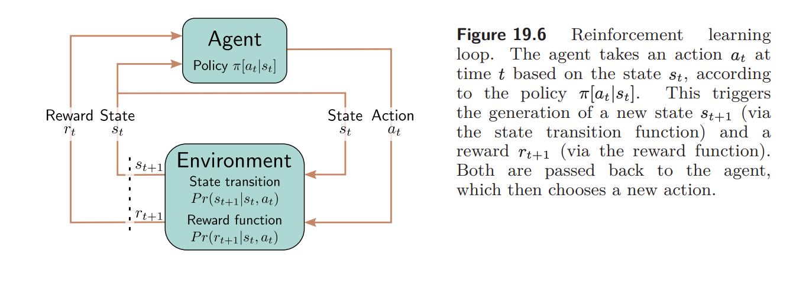
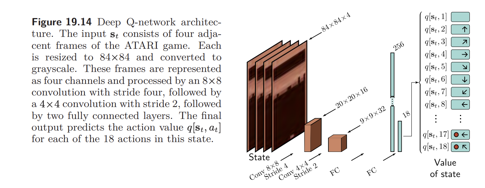

C19.Reinforcement Learning
动机 agent, environment, FSM, 目标, 回报率
Rmk 简单的已知的环境完全可以通过逻辑和博弈得到最优策略(Dijkstra), 复杂的未知的环境下当前使用神经网络与损失函数的范式完全就是深度学习加上一个特制的输出头.
与DL的不同之处:
- 有些方法可能不用向后传播更新参数, 而是求梯度后与目标损失做乘法更新参数
- 训练数据无限, 没有训练集和测试集, 只要有仿真环境, 每一次训练后的验证就是测试
Value Learning的几个装备:
- DP: 现在expected return和未来expected return的依赖关系(更新策略和损失函数的主要依据)
- MC: 采样路径得到expected return近似值 (同时适用model based和model free)
- TD/Q: on/off policy (此外, 每做一个action都计算一次近似值)
- 期望回报$\R^{d_s}\rightarrow \R$, Q值$\R^{d_s \times d_a} \rightarrow \R$, polocy $\R^{d_s \times d_a} \rightarrow \R$($d_a$方向归一化), 一般$d_a$大小固定, 可能是无穷. 前者直接拟合期望回报, 后者基于似然.
这里的$a$离散或连续都行, 但一般连续的a使用policy多一点?
1.Markov process
markov process 只根据上一个状态得出下一个状态, 状态之间转换通过*transition probability* $Pr(s_{t+1}|s_t)$进行, 最终可以得到状态的序列$s_1, s_2, s_3, ...$
markov reward process 在markov prosecc的基础上再引入一个概率$Pr(r_{t+1}|s_t)$, 即当前状态reward的分布. 最终可以得到序列$s_1, r_2,s_2, r_3,...$(即假定reward在离开当前状态时得到)
markov decision process 在markov reward process的基础上再引入actions $a_t$ 可以改变transition probability, 即transition probability可以重写为$Pr(s_{t+1}|s_t, a_t)$, 当前的reward也依赖于action$Pr(t_{t+1}|s_t, a_t)$
partially observable markov decision process 状态$s$不能直接看到, 每次得到一个observation $Pr(o_t|s_t)$, 通过observation得到状态$s$
policy policy就是决定actions的规则. 这种规则可以是确定性的, 也可以是一个分布, 即一个*stochastic policy* $\pi[a|s]$返回在可选择的action中返回一个概率分布, 或者一个 deterministic policy $\pi[a|s]$在可选择的action中返回一个one-hot编码. 此外, A stationary policy depends only on the current state. A non-stationary policy also depends on the time step.
至此, agent和environment可以形成一个循环(某种agnet-environment回合制, 很像FSM)

2.Expected return
2.1.符号
return return$G_t$指未来所有时间内的reward的和:
$\gamma\in(0,1]$, 实现了时间越远的reward权值越小.
expected return 给定policy, 使用expeted return $v$ 来判断当前状态的好坏:
action value expected return from executing action $a_t$ in state $s_t$
optimal policy 对于一个完全可观测的马尔可夫链(MDPs), 总是有最佳的policy使得expeted return和action value最大:
注意, 使用最佳的action还可以用于更新policy:
2.2.bellman equation
虽然有些时候可能无法直接写出v和q, 但肯定可以写出这两者的关系:
当前expected return可以写成当前action value的加和
当前所有action value可以写成下一步expeted return的加和:
其中gamma是一个超参数.
将上述两个等式相互代入即可得到bellman equation:
3.Tabular reinforcement learning
表格化的RL分为两种: model-based 和 model-free, model-based指MDP是已知的, 用DP就可以解决, model-free指MDP需要自己进行估计.
3.1.dynamic programing
复习-DP算法
DP算法得到一个字典Dict从而避免重复计算, 而字典的得到需要知道元素的依赖关系和状态转移方程, 以一个合适的顺序遍历得到字典.
DP假设我们有完美的知识关于transition and reward structure, 只需要根据bellmen equation计算即可:
policy evaluation 计算所有状态s的expeted return v:
可见这里的v的依赖关系出现了环: $v[s_t]\leftarrow v[s_{t+1}]\leftarrow v[s_{t+2}]$, 有可能$s_{t+2}=s_t$. 所以这其实不是经典的DP, 只能将v全部初始化为0, 忽略依赖关系遍历整个v, 重复遍历直到v收敛.
注意这里还用到了pi, 又多了一个相互依赖的关系.
policy improvement 根据expected return直接贪心得到policy:
pi初始化为随机, 在v更新后再更新pi.
由于相互依赖, pi和v的更新也需要不断迭代, 直到收敛.
学校作业里只用一个表格$v(s)$就能搞定, policy直接使用能达到下一个最大$v[s_t]$的动作即可:
3.2.Monte Carlo method
假设不知道MDP的任何知识, 需要通过实验累积:
随机游走采样得到数据, 一次随机游走得到一条路径, 根据路径上的平均return更新v (可以全程随机游走, 也可以第一轮随机游走后更新v, 后面再根据v游走):
(最后更新policy)实际上value learning不需要更新policy, 直接greedy按照表格上的value来就行:
on-policy method 使用根据历史记录得到的policy的最佳选项, 对于没有探索的部分永远也不会探索.
off-policy method 使用一个带有随机化的policy $\pi'$ 并不断更新, 随机化可以用于探索未知的部分, 最终逼近最优policy $\pi$
3.3.Temporal difference methods
同样假设不知道MDP的任何知识, 需要通过实验累积, 但每走一步就更新一次policy
SARSA (State-Action-Reward-State-Action) 是一个on-policy算法:
其中, $\alpha\in\R$是learning rate, $a_{t+1}$由on-policy可以直接得到, namely:
Q-learning 是一个off-policy算法:
其中, max a指policy $\pi'$ 的最优解
Epsilon greedy:
if torch.rand(1) < epsilon:
a = torch.randint(0, action_dim, (1,), device=device).item()
else:
with torch.no_grad():
a_value = q_net.forward(torch.from_numpy(state).to(device))
a = torch.argmax(a_value).item()
return int(a)4.fitting Q-learning
将action value用dl模型代替 $q(\bold s_t, a_t,\boldsymbol \phi)$, 注意这里的$\bold s_t$变成了向量, 将平方误差定义为(大概就是最大化当前reward和未来reward, greedy选择动作):
则参数更新规则为:
注意 新的方法与原来的Q-learning有一点不同: 原来的Q-learning直接更新q, 可以在理论上保证收敛, 而fitting Q-learning更新的是phi, 无法保证收敛.
学校作业-TargetNet
两个Q模型$q, q'$, (实则是三层$MLP: \R^{d_s}\rightarrow \R^{d_a}, q(s_t,a_t)=(MLP(s_t))_t$) 参数分别是$\phi, \psi$, 其中$\phi$用梯度向后传播更新, $\psi$用一种另类的方法更新, $MLP$输出的动作是离散的(一个向量, 下标是动作, 值是概率)
where $ a_t= \arg \max_a q(s_t,a)$, $s_{t+1}= Environment(s_t,a_t)$, 实验中默认参数是$\gamma = 0.99, \tau = 0.005$
4.1.Application: ATARI game
映射 直接输出当前状态下所有action的q

特殊优化
1.游戏的分数变化简化为+-1
2.更新网络不仅仅依靠 $<s_t, a_t, r_{t+1},s_{t+1}>$, 而是将过去所有的情况都存起来, 抽样更新网络
3.固定参数$\phi^-$促进收敛:
4.2.double Q-learning
在Q-learning中, q值的随机初始化会导致模型在初次遇到未更新的q时的选择变得十分不稳定
同时训练两个模型减少这种不稳定:
训练两个相同结构不同参数的模型$q(s,a,\phi_1),q(s,a,\phi_2)$:
学校作业-Dual DQN
5.Policy gradient method
Q-learning通过学习action value更新policy. 而 policy based method 直接学习一个 policy $\pi(a_t|s_t,\theta)$. 此处的policy输出是一个概率$Pr(a_t|s_t)$, 这是为了引入一点随机性.
Rmk 似乎和Q-learning差不多
5.1.loss funciton and gradient update
设一条路径(trajectory)为 $\tau=[s_1,a_1,s_2,a_2,...,s_T,a_T]$, 则 $Pr(\tau,\theta)$由policy $\pi(a_t|s_t,\theta)$ 和 state evolution function $Pr(s_{t+1}|s_t,a_t)$决定, 可以写成:
则优化算法可以写为让expeted return $r[\tau]$ 最大, 在众多可能的tau中:
其中, expected return $r[\tau]=\sum_{t=1}^T r_{t+1}$. (和之前的不一样)
则更新方法为:
最后一行使用Manto Carlo方法近似, 通过进行$I$次实验(episode)得到积分的近似.
又, 利用恒等式:
原式有:
再代入$Pr(\tau|\theta)$, 得:
最终有:
对应一个什么损失函数呢:
5.2.REINFORCE algorithm
REINFORCE 是一种算法(不明白为什么要大写, 似乎只是上一节的一点点改进), 每次根据当前的pi走完一个episode后, 将整个episode循环一遍进行参数更新.
不同于上一节的是, 这里用的expeted return和本章开头介绍的保持一致, 不同于上一节的简单将未来reward相加:
在一个trajectory的第t步进行如下参数更新:
上式也带了一个gamma.
5.3.Baselines优化
policy gradient算法不稳定(variance 较大), 在更新中添加一个baseline b:
很容易证明, 只要b与action无关, 上式对损失函数的最优值没有影响:
选择一个可以添加稳定性的b需要:
实践中一般使用:
5.4.State-dependent baseline
baseline depend on state:
令b为未来所有reward之和, 可以恰当的消除总reward很大对算法的剧烈波动.
使用一个神经网络进行未来reward之和的拟合, 损失函数为:
6.Actor-critic methods
不同于上一节的REINFORCE算法(需要走完整个trajectory再回头进行更新, 相当于q-learning中的Monte Carlo), 而是直接在每一步进行更新. 是一个temporal difference方法(即不通过实验).
由于未来的reward不知道, 再加一个神经网络用语拟合未来的reward $v[s_{i,t+1},\phi]$ (类似上一节的baceline):
更新方法为:
最后减去的v相当于上节的baseline.
使用如下损失函数得到该v:
Rmk 通常, actor-critic不会直接拿来用, 而是先使用一些实验数据训练再用.
学校作业-PPO
使用两个神经网络, 一个输出action的均值 $MLP_1:\R^{d_s} \rightarrow \R^{d_a}$, 用于得到action的正态分布, 于此同时正态分布的方差直接使用一个可学习的参数, 另一个输出expected return(value) $MLP_2: \R^{d_s} \rightarrow \R$ . 实验中$MLP_1$输出的动作是一维的连续值(数值代表动作, 概率密度还需要另一个函数), $\pi(s_t)\sim \mathcal N(MLP_1(s_t), \sigma^2), v(s_t) = MLP_2(s_t)$
每采完一条路径再更新模型, 对于使用上一轮模型选择动作采样得到的路径记录每一步的$s_t,a_t,r(s_t)=R[t], v(s_t)=V[t]$, 每条采样路径计算advantage:
then 对于每一步, the loss function is:
where $\pi_{old}$是训练前保存的概率密度(在第一个min-batch中$r$必然为1). 上述中$\mathcal L_{policy}$的Advantage和$\pi_{old}$不进行向后传播, 其余均进行向后传播. 模型促进熵增是为了让模型积极探索.
Rmk 这里 $V[t]$ 拟合的是Reward, 不是Q, 所以不会出现 $R[t] + \gamma \cdot V[t+1] - V[t] \rightarrow 0$ 的情况.
此外还有将动作映射到合法区间的函数和一些对 $Advantage[t]$ 和 $V[t]$ 限制到一定范围的操作.
7.Offline reinforcement learning
在Q-learning和policy gradient中只使用历史数据进行训练十分常见, 因为实时学习现实世界的设备昂贵或者时间花费大.
通过历史数据对其中的步骤进行预测, 和transformer decoder如出一辙. 将每一步的s, a, R做成word embedding ($R=\sum_{t=t'}^T r_{t}$), 加上position embedding和masked-selfattatention
学校作业-多智能体
全局状态
实际的实现$q(s',a)$, $s'=concat(s, onehot(agnet\_idx))$
§Problem
Problem19.2
Prove the policy improvement theorem. Consider changing from policy $π$ to policy $π '$ , where for state $s_t$ the new policy $π '$ chooses the action that maximizes the expected return:
and for all other states, the policies are the same. Show that the value $v[s_t|π]$ for the original policy must be less than or equal to $v[s_t|π ' ]$ for the new policy (notation indicates using $π '$ for state $s_t$ and $π$ thereafter):
Proof 将上式重复代入即可.
Problem19.5
When the learning rate α is one, the Q-Learning update is given by:
Show that this is a contraction mapping (equation 16.30) so that:
where $||•||_∞$ represents the $ℓ_∞$ norm. It follows that a fixed point will exist by Banach’s theorem Vector norms and that the updates will eventually converge.
Proof ? 无穷norm要用在向量上吧.
Problem19.7
Suppose that we want to estimate a quantity $E[a]$ from samples $a_1, a_2 . . . a_I$ . Consider that we also have paired samples $b_1, b_2 . . . b_I$ that are samples that co-vary with a where $E[b] = µ_b$. We define a new variable:
Show that $Var[a ' ] ≤ Var[a]$ when the constant $c$ is chosen judiciously. Find an expression for the optimal value of $c$.
Proof
当$c^2Var(b) \le 2cCov(a,b)$ 立得 $Var[a ' ] ≤ Var[a]$.
由二次方程立得, 当:
时有最小值.